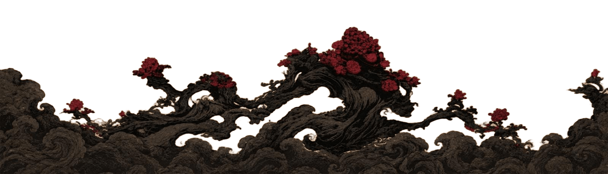
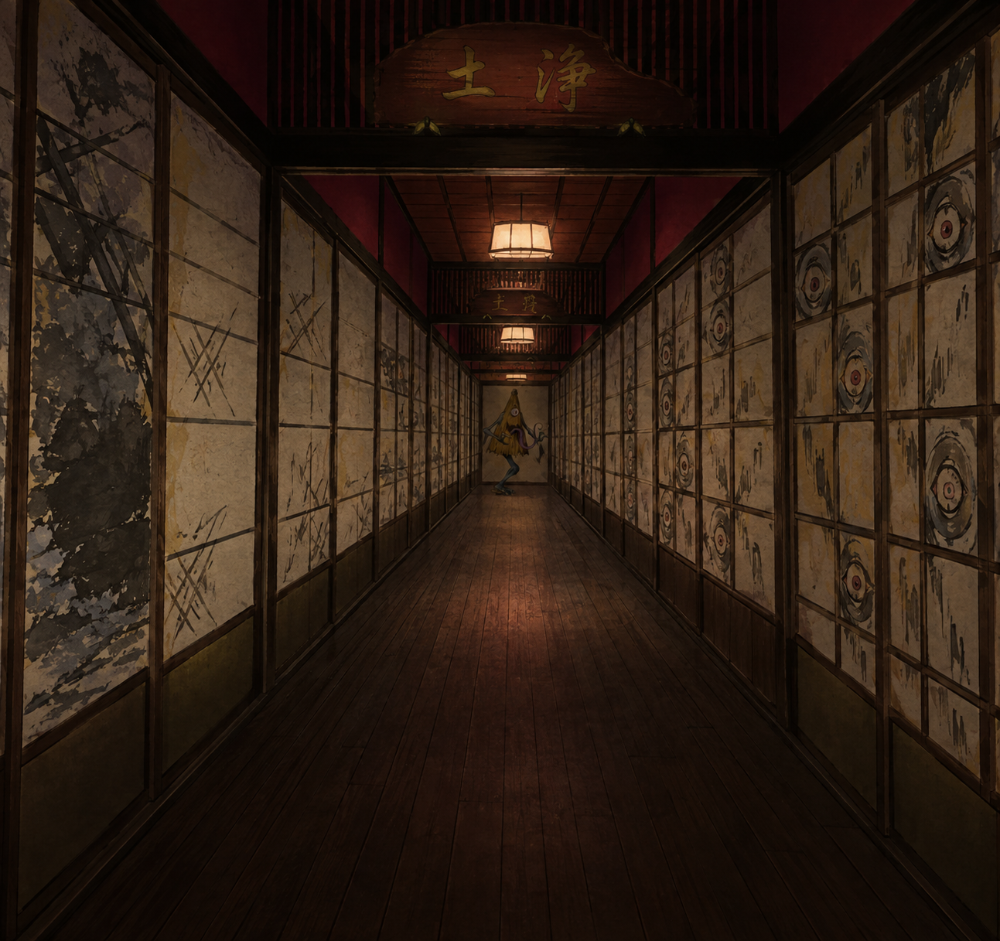

Os Yōkai são criaturas sobrenaturais presentes no folclore japonês. Eles podem assumir diversas formas, desde animais e espíritos até monstros e seres ligados à natureza. Suas histórias surgiram há séculos a partir de crenças populares, tradições religiosas e da tentativa de explicar acontecimentos misteriosos ou fenômenos que as pessoas não compreendiam. Com o passar do tempo, essas histórias foram transmitidas entre gerações e ganharam novas formas, principalmente durante o período Edo, quando livros, pinturas e ilustrações ajudaram a popularizar essas criaturas. Nem todos os Yōkai são malignos: alguns são travessos, outros assustadores e alguns podem até ajudar os humanos. Hoje, eles continuam presentes na cultura japonesa, aparecendo em lendas, mangás, animes, filmes e jogos.

Hyakki Yagyō, ou “Procissão Noturna dos Cem Demônios”, é uma lenda japonesa que conta que, durante a noite, diversos yōkai saem para percorrer as ruas. Acreditava-se que encontrar essa procissão poderia trazer perigo. Ao longo dos séculos, a história foi retratada em pinturas, pergaminhos e livros, tornando-se uma das lendas mais conhecidas sobre os yōkai.
Venha conhecer um pouco mais sobre cada youkai
Desvendar youkais